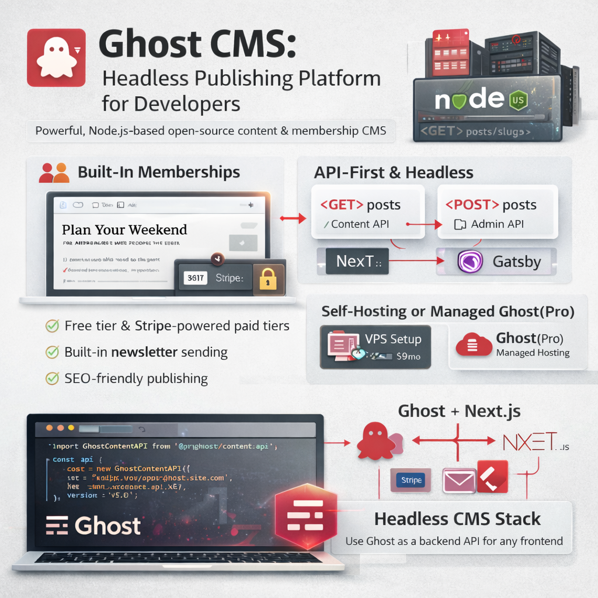

Ghost is an open source, Node.js-based publishing platform built specifically for professional content creators, newsletters, and membership sites. While WordPress powers 43% of the web, Ghost has carved out a distinct niche: a fast, focused, developer-friendly CMS that does one thing extremely well — content publishing with monetization built in.
I've migrated several client sites from WordPress to Ghost and built custom Ghost integrations over the years. This guide covers everything a developer needs to know to evaluate Ghost for their project and get started quickly.
What Is Ghost CMS?
Ghost is not a general-purpose CMS like WordPress. It's purpose-built for:
- Publishing — clean editorial interface, Markdown and card-based editor
- Newsletters — built-in email sending via Mailgun or custom SMTP
- Memberships — free/paid tiers, Stripe integration, member-only content
- Headless / API-first — full REST and GraphQL-like Content API for decoupled frontends
Ghost vs WordPress: Which Should You Choose?
Choose Ghost when:
✓ Your primary use case is a newsletter or publication
✓ You want built-in membership and paid subscriptions (Stripe ready)
✓ You want a faster, simpler admin experience
✓ You're using a headless/decoupled frontend (Next.js, Nuxt, Gatsby)
✓ Your team is comfortable with Node.js for self-hosting
✓ You want clean, SEO-friendly URLs and automatic sitemap without plugins
Choose WordPress when:
✓ You need a large plugin ecosystem (WooCommerce, LMS, booking systems)
✓ Your client is non-technical and needs a familiar CMS
✓ You need extensive page builder capabilities (Elementor, Divi)
✓ You're building an eCommerce site with complex product catalogs
✓ The hosting team only knows PHP/cPanel
✓ You need deep multisite or multilingual support
Ghost Content API: Using Ghost Headless
Ghost's Content API is its most powerful feature for developers. It's a read-only REST API that returns all your posts, pages, authors, tags, and settings as JSON — no authentication needed for published content.
// Ghost Content API with the official JavaScript SDK
import GhostContentAPI from '@tryghost/content-api';
const api = new GhostContentAPI({
url: 'https://your-ghost-site.com',
key: 'your_content_api_key', // found in Ghost Admin > Integrations
version: 'v5.0'
});
// Fetch all published posts
const posts = await api.posts.browse({
limit: 'all',
include: 'tags,authors',
filter: 'featured:true'
});
// Fetch a single post by slug
const post = await api.posts.read({
slug: 'my-post-slug'
}, {
include: 'authors,tags'
});
// Fetch all tags
const tags = await api.tags.browse({
limit: 'all',
include: 'count.posts'
});
console.log(posts[0].title); // "My First Post"
console.log(posts[0].html); // Full rendered HTML content
console.log(posts[0].custom_excerpt); // SEO excerpt
console.log(posts[0].feature_image); // Featured image URLGhost + Next.js: Headless Setup
The most common production setup I recommend: Ghost as backend CMS, Next.js as the frontend. Ghost handles content, Stripe subscriptions, and email. Next.js handles SEO, performance, and UI.
// pages/blog/[slug].js — Dynamic post page in Next.js
import GhostContentAPI from '@tryghost/content-api';
const api = new GhostContentAPI({
url: process.env.GHOST_API_URL,
key: process.env.GHOST_CONTENT_API_KEY,
version: 'v5.0'
});
// ISR: revalidate every 60 seconds
export async function getStaticProps({ params }) {
const post = await api.posts.read(
{ slug: params.slug },
{ include: 'authors,tags' }
);
return {
props: { post },
revalidate: 60
};
}
// Pre-generate all post slugs at build time
export async function getStaticPaths() {
const posts = await api.posts.browse({ limit: 'all' });
const paths = posts.map(post => ({
params: { slug: post.slug }
}));
return { paths, fallback: 'blocking' };
}
export default function PostPage({ post }) {
return (
<article>
<h1>{post.title}</h1>
<div dangerouslySetInnerHTML={{ __html: post.html }} />
</article>
);
}Ghost Admin API: Reading and Writing Content Programmatically
The Admin API requires authentication and gives full read/write access — use it for automations, migrations, and CMS integrations:
import GhostAdminAPI from '@tryghost/admin-api';
const adminApi = new GhostAdminAPI({
url: 'https://your-ghost-site.com',
key: 'your_admin_api_key:your_admin_api_secret',
version: 'v5.0'
});
// Create a new post programmatically
const newPost = await adminApi.posts.add({
title: 'Automated Post from API',
html: '<p>This post was created via the Ghost Admin API.</p>',
status: 'published',
tags: [{ name: 'API', slug: 'api' }],
custom_excerpt: 'A brief excerpt for SEO meta description'
});
// Update an existing post
const updated = await adminApi.posts.edit({
id: newPost.id,
title: 'Updated Post Title',
updated_at: newPost.updated_at // required for conflict detection
});
// Upload an image
const image = await adminApi.images.upload({
file: '/path/to/image.jpg'
});Ghost Membership & Newsletter Features
Ghost's built-in membership system is a significant differentiator from WordPress. No plugins needed:
Member Tiers
- Free tier — visitors can sign up for a free newsletter subscription
- Paid tiers — Stripe-powered monthly/annual subscriptions with custom pricing
- Complimentary — manually grant paid access to specific users
Email Newsletter
Every post can be sent as a newsletter email to all or a subset of members. Ghost connects to Mailgun (recommended) or any SMTP provider. The email template is customizable via Handlebars:
{{!-- Ghost email template: email.hbs --}}
<div class="email-body">
<h1>{{post.title}}</h1>
{{post.html}}
<div class="email-footer">
<p>You're receiving this because you subscribed to {{@site.title}}.</p>
<a href="{{unsubscribe_url}}">Unsubscribe</a>
</div>
</div>Self-Hosting Ghost: Deployment Options
Ghost(Pro) — Managed Hosting
The official managed hosting. Starts at $9/month (Starter). Handles updates, backups, Mailgun setup, and CDN. Best option if you want zero server maintenance.
Self-Hosting on a VPS
# Install Ghost CLI
npm install ghost-cli@latest -g
# Create installation directory
mkdir /var/www/ghost
cd /var/www/ghost
# Install Ghost (interactive setup — prompts for domain, DB, Nginx, SSL)
ghost install
# Ghost CLI commands
ghost start
ghost stop
ghost restart
ghost update # updates Ghost to latest version
ghost log # view logs
ghost status # check running statusGhost with Docker
# docker-compose.yml for Ghost + MySQL
version: '3'
services:
ghost:
image: ghost:5-alpine
restart: always
ports:
- "2368:2368"
environment:
database__client: mysql
database__connection__host: db
database__connection__user: root
database__connection__password: ${MYSQL_ROOT_PASSWORD}
database__connection__database: ghost
url: https://your-domain.com
volumes:
- ghost-content:/var/lib/ghost/content
db:
image: mysql:8.0
restart: always
environment:
MYSQL_ROOT_PASSWORD: ${MYSQL_ROOT_PASSWORD}
volumes:
- mysql-data:/var/lib/mysql
volumes:
ghost-content:
mysql-data:ghost install with root access. For Docker deployments, add a Traefik or Caddy container for automatic SSL.
Ghost Themes: Handlebars Templating
Ghost themes use Handlebars.js templating. The structure is straightforward:
my-ghost-theme/
├── index.hbs // Blog listing page
├── post.hbs // Single post template
├── page.hbs // Static page template
├── tag.hbs // Tag archive page
├── author.hbs // Author archive page
├── error.hbs // Error page
├── default.hbs // Base layout (wrapped by all templates)
├── package.json // Theme metadata & config
└── assets/
├── css/
└── js/{{!-- post.hbs -- single post template --}}
{{!< default}}
<article class="post {{post_class}}">
<header>
<h1 class="post-title">{{title}}</h1>
<div class="post-meta">
{{authors}} · {{date format="DD MMM YYYY"}} · {{reading_time}}
</div>
{{#if feature_image}}
<img src="{{feature_image}}" alt="{{title}}">
{{/if}}
</header>
<section class="post-content">
{{content}}
</section>
{{#foreach tags as |tag|}}
<a href="{{tag.url}}">#{{tag.name}}</a>
{{/foreach}}
</article>
Anju Batta
Senior Full Stack Developer, Technical SEO Engineer & AI Automation Architect with 15+ years of experience. I work with Ghost CMS, WordPress, Next.js, Laravel, and Shopify to build publishing platforms and digital products for clients across India and internationally.
Hire Me for Your CMS Project →